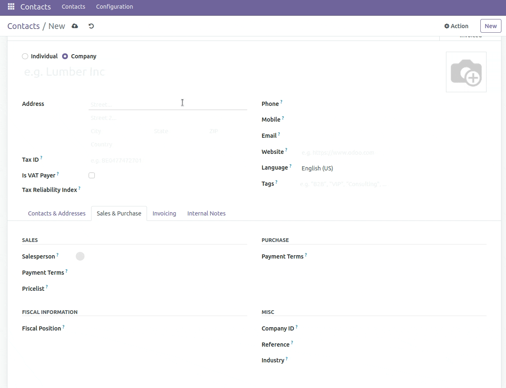

Dopĺňa údaje partnerov z českého registra ARES
(ares.gov.cz, predtým wwwinfo.mfcr.cz). Zapája sa do rámca
partner_autocomplete_dispatcher ako poskytovateľ ARES.CZ, takže ho možno
zvoliť pre jednotlivé spoločnosti a využiť na našeptávanie, obohatenie jednotlivého záznamu
aj hromadné obohatenie pri importe.
Vyhľadáva sa podľa obchodného mena (search) alebo podľa IČO; výsledok vyplní názov, adresu, krajinu a DIČ a IČO možno cez nastaviteľné dynamické mapovanie zapísať do zvoleného poľa.
import_enrich_company) a
obohatenie na požiadanie akciou Aktualizovať zo zoznamu kontaktov.V Nastavenia ▸ Všeobecné nastavenia ▸ Kontakty zapnite Dopĺňanie partnerov,
zvoľte poskytovateľa ARES.CZ a prípadne pole na mapovanie IČO. Na kontakte začnite
písať obchodné meno alebo IČO a vyberte návrh; záznam sa doplní z ARES. Existujúce záznamy
aktualizujete ich výberom v zozname kontaktov a spustením Akcia ▸ Aktualizovať. Pre
obohatenie pri importe pridajte stĺpec import_enrich_company s IČO.

Vydáva Data Dance s.r.o. — www.datadance.eu
Licencia: Data Dance Proprietary License v1.0